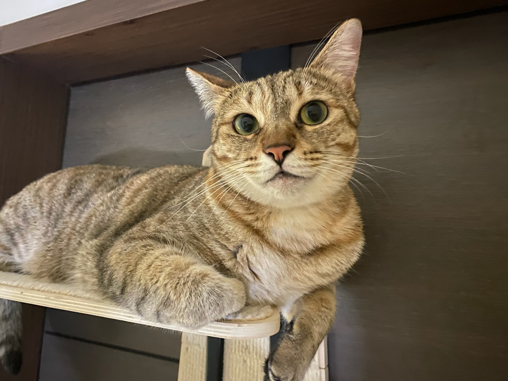
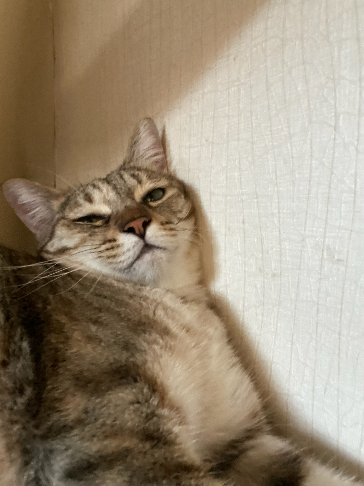

Bacon Q Dog

Bacon Q. Dog is a 9yr old labradoodle. He prefers to spend his days lounging among the three different beds/couches that his family has gifted him. He enjoys a walk or two around the neighborhood, as long as he can pretend that he doesn't see any of the other animals to avoid the embarrassment of not wanting to admit he has no wolf-like skills in chasing them.
At night just as the rest of the family is ready to relax, Bacon suddenly wants to release all of his energy. He will place his toys on a mini couch and frantically drag the couch around, giving his toys "a ride." There is also a lot of rolling. Lots and lots of rolling.
Photo Gallery


Likes
- Belly rubs
- Playing tug-of-war
- Sneaking onto the couch
Fitz

Loves chasings tennis balls, chipmunks, squirrels, and birds. Often found sitting by the fire in wintertime, and in sun patches when available. He is energetic, mischievous, and easily bored. He loves people and gets grumpy if left without a lap too long.
Loves barking up trees, running around on the lawn, and digging in the dirt looking for moles. He especially likes getting treats and whines when he comes inside and does not get a snack.
Photo Gallery


Likes
- Blankets
- Being Warm
- Barking
Sprout

Sprout, a shy and elusive kitten when he first arrived at four months old, gradually became an affectionate companion. He enjoyed sleeping on my bed, but his early morning wake-up calls at 6:30 AM were a daily routine.
During my challenging academic phase, Sprout became my constant companion during late-night drawing sessions, quietly curling up on my lap, providing comfort and banishing solitude.
Photo Gallery


Likes
- Eggs
- Playing with tennis ball
- Sleeping in sunshine
Pluto

Pluto is a five year old rescue dog of an unknown breed. He was found wandering alone and taken to the Valley Humane Society where he found his new family. From a young age, Pluto always had a special personality, he was known for being very very lazy! He spends most of his time staring out the window to keep watch of his house. Do not let the laziness fool you because Pluto defends his family from the mailman and squirrels every single day.
Aside from his job as defender of the house, Pluto likes to have fun. His favorite part of the day is his daily walk. Sometimes he even gets to go to the park and meet his neighbors. He also loves his toy duck, and only his toy duck. As a dog, it's in his nature to hunt and so he makes sure to get some practice with his toy duck.
Photo Gallery


Likes
- Eating his bone
- Going to the beach
- His toy duck
Go Blue
Go Blue is a six year old short-haired tabby cat rescued from the Huron Valley humane society. Being born and raised in Ann Arbor, Michigan, we gave him his iconic name! He is a lazy cat and doesn't like to do much other than lounge and enjoy his owners' company. He loves being pet and frequently follows you where every you go to beg for some pets. Sometimes he even wakes up his owners in the middle of the night to pet, and because of this he needs to be put outside. Still, he is always the first thing visitors see when they enter the house.
Occasionally, Go Blue likes to play. He enjoys playing with a string feather toy that his owners dangle about. Because he doesn't like to play often, he is not very successful in capturing this toy. After a while, Go Blue usually gives up and decides to take a nap inside his cat house. Go Blue is also an incredibly picky eater. He can only eat during certain times of day when his owners are home. If not, sometimes he does not eat! Despite being a quirky cat, Go Blue is sure to entertain.
Photo Gallery



Likes
- Naps
- Being pet
- Cuddling with people
Koda
Koda is a 1 year old English Golden Retriever. Some of her nicknames include Koda Bear and KP. Her favorite human foods are watermelon and pumpkin, and she is terrified of baths.
Koda enjoys dragging family on long walks, eating ice cubes, playing fetch, and doing living room zoomies in her free time.
Photo Gallery

Likes
- Long walks
- Toys
- Sprinklers
Lulu

Lulu is a lively guinea pig who enjoys eating carrots and peppers. When not given any carrots or peppers she will squeak.She has plenty of energy and is frequently seen zipping around her cage and pawing at the railing. Eventually she tires herself out.
Lulu is very adventurous. She will explore her surroundings looking for food and is not afraid of hardly anything. If let out of her cage she frequently gets lost. Luckily she can squeak for help if she needs it.
Photo Gallery


Likes
- Long walks
- Toys
- Sprinklers